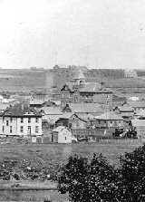

Saskatoon, Saskatchewan Downtown 1913

Saskatoon Downtown,
c1906
|
Saskatoon, a commercial and educational centre in the province of Saskatchewan, is
situated on the banks of the South Saskatchewan River in Townships 36 and 37, Range
5 and Township 36, Range 6, West of Third Meridian. In 1890 the Qu’Appelle, Long Lake
and Saskatchewan Railway Company bridged the river at Saskatoon and built a line to
Prince Albert. A new settlement soon developed on the west side of the river around
the railway station. In 1901, the present-day downtown area (on the west side of the
river) was incorporated as a village and kept the name of Saskatoon. A third
settlement, Riversdale, developed west of the railway tracks. The name of the original
settlement on the east side changed to Nutana. In 1903 it became a town and in 1906
with the promise of a traffic bridge and other civic improvements, the three settlements
amalgamated to form a city. Following the formation of the Province of Saskatchewan
on September 1, 1905, the premier focused on the creation of a provincial university
and agricultural college, which was approved for Saskatoon in 1907.
The trickle of immigrants was becoming a flood and Saskatoon became the fastest growing
city in Canada. Saskatoon became the central city of central Saskatchewan because a
small group of pioneer businessmen tirelessly lobbied to make sure the railways came to
their town. By 1908 three railway bridges and a traffic bridge crossed the South
Saskatchewan and Saskatoon was the hub of a transportation network. The first real
boom was during the period 1906-08. A second, even more vigorous boom period was from
1910 to 1913. By 1911, the population had more than doubled and Saskatoon had become
a major distribution centre for the surrounding agricultural district.
|